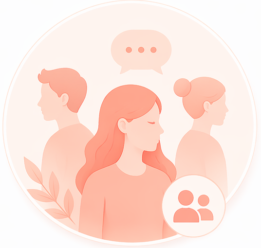

Panduan sehat untuk memperkuat hubungan sosial dan membantu Anda tetap merasa ditemani selama masa menopause.

Bangun dukungan sosial yang nyaman melalui komunikasi, hubungan yang sehat, dan lingkungan yang saling memahami.
Berbagi perasaan membantu orang terdekat memahami kondisi Anda.
Dukungan dari orang terdekat membantu Anda merasa lebih tenang dan dipahami.
Menjaga hubungan sosial membantu mencegah rasa sendiri dan terisolasi.
Bergabung dengan komunitas dapat memberi dukungan dan rasa kebersamaan.
Menjaga batasan membantu Anda tetap nyaman dalam hubungan sosial.
Mencari bantuan adalah langkah sehat saat Anda merasa kewalahan.